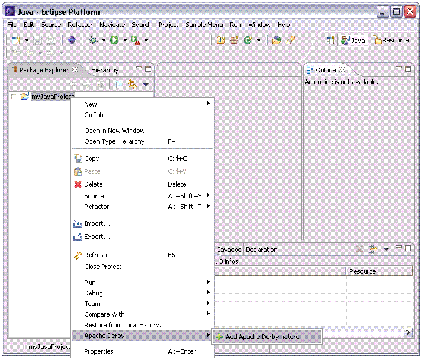

Adding the Derby nature to a Java project
Once a Java project is created the Derby nature can be added from within
the Java perspective. To add the Derby nature to your project:
-
From the Java perspective, select the project in the Package Explorer view. Right-click the project to bring up the context menu and select
the menu item, Apache Derby, Add Apache Derby nature.

Adding the Derby nature to your Java project does the following:
-
Adds the derby.jar, derbynet.jar, derbytools.jar, derbyclient.jar jar files to the Java Build Path of the project.
-
Enables the Derby features for the project. The ij and sysinfo
tools are now accessible from the Eclipse menu, and the Apache Derby Network Server can now be started and stopped from within Eclipse.
-
Allows Apache Derby properties to be set for the project.